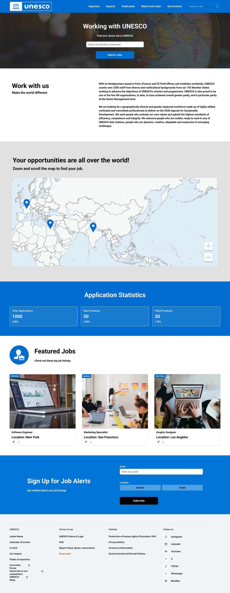

My Mission & Overview
As someone deeply passionate about volunteerism and a long-time admirer of UNESCO's vital global impact, I was driven by a single question: How can we better connect passionate people with the causes they care about most? Through conducting deep-dive user interviews, I gained profound insights into the genuine, heartfelt desire people have to contribute their unique talents to society. Hearing these stories filled me with hope.
I redesigned the UNESCO website to help volunteers, NGOs, and students find global opportunities more easily. By simplifying the site's layout and creating clear pathways for users, my goal was to transform a complex website into a user-friendly tool that strengthens UNESCO's internal structure and global capabilities.
A Barrier to Impact
Despite UNESCO's massive global influence, potential volunteers and partners were struggling to get involved. Through a professional heuristic evaluation and user testing, I identified several critical barriers preventing users from engaging with the organization's mission:
Users struggled with inconsistent labels, making it difficult to find NGO partnerships or funding details.
High-value roles, such as short-term, skill-based volunteering, were hidden deep within the site.
Students and first-time visitors lacked a clear "starting point," leaving them overwhelmed by heavy text and technical jargon.
From Data to Solution
To ensure the redesign was truly user-centric, I followed a structured, data-driven approach.
1. Empathizing with the Users
I surveyed 10 potential users and discovered that while people are highly motivated by global impact, they are often discouraged by complex sign-up processes.


Creating these personas was a turning point. It shifted my focus from general "user issues" to solving specific problems — like Alex's need for time-efficient, tech-driven roles, or Li Wei's need for an easy student onboarding process.
2. Auditing & Testing Strategy
I conducted a heuristic evaluation to pinpoint technical friction points (like missing hover effects) and created a comprehensive Usability Test Plan Dashboard. This included specific scenarios and observation sheets to measure how effectively users could complete core tasks.
3. Prototyping the Solution
Moving into Figma, I restructured the information architecture. I focused on:
- Dedicated Pathways: Creating tailored navigation for Students, Professionals, and NGOs.
- Visual Feedback: Adding clear interactive cues and progress indicators.
- Simplifying Content: Reducing cognitive load by breaking up large text blocks.

The Redesign

The redesigned Home Page featuring clear calls-to-action and an intuitive, welcoming layout.

.png)
Interactive Map View and structured Career Pages allow users to filter opportunities by region and skill type, solving the "buried content" issue.


What I Learned
This project fundamentally shaped my approach as a product designer:
- Data Drives Design: Seeing real users struggle to find "hidden" links proved that even the best content is useless if the navigation logic doesn't match the user's mental model.
- Simplicity is Key: For a global organization, "less is more." Reducing text-heavy pages lowered the cognitive load and made the site feel welcoming.
- Accessibility is Inclusivity: Improving navigation labels and loading feedback ensures people from all technical backgrounds can contribute to the mission.
- Continuous Iteration: A design is never truly "finished." Each round of testing revealed new insights, teaching me to embrace feedback as a tool for constant improvement.
Next Steps
In summary, my usability evaluation and redesign of the UNESCO website addressed critical areas in navigation, search functionality, and mobile accessibility. Addressing these issues is essential to enhance the user experience and support UNESCO's organizational goals.
Future Research:
- Conduct follow-up testing post-implementation to assess real-world improvements.
- Explore user behavior analytics for continuous optimization.
- Include a broader demographic in future testing to capture an even more diverse set of user needs, ensuring those who wish to contribute always have a stage to showcase their efforts.